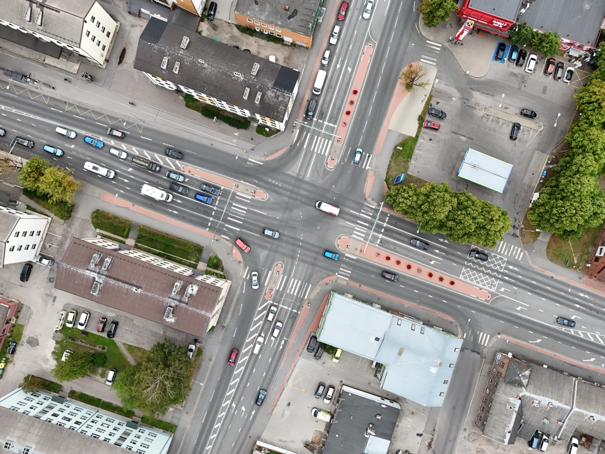

Pärnu Parking Analysis & Strategy
Pärnu needed the same clear-eyed picture of its parking supply and demand that SPIN Unit had built for Tartu — but with its own complications: a beach-town tourism cycle, a large share of parking on private land, and a Rail Baltica terminal due to reshape the city within a few years.
Commissioned via public tender (December 2023), contracted mid-2024, and delivered through a staged process including a stakeholder Delphi workshop in March 2025, concluding with a final presentation to the city council in December 2025. Built on the same methodology and FANS (Fees, Awareness, Norms, Spatial settings) policy framework SPIN Unit developed for its earlier Tartu parking study.
Combined GIS spatial analysis (land use, cadastre, building registry, canopy cover), parking transaction and mobile-payment data, a drone survey of the city, accessibility modelling across seven service categories, and a stakeholder Delphi workshop, benchmarked against the international FANS measures catalogue. Three future policy scenarios — Conservative, Progressive, and Innovative — were developed and scored against the same framework.
Delivered as a full analysis report, a policy recommendations report, an executive summary, and a final council presentation, following multiple rounds of city feedback and revision through 2025.
{kind=link}

Open full size ↗